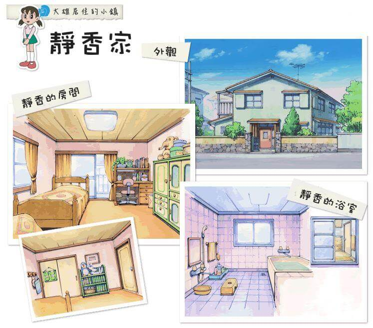
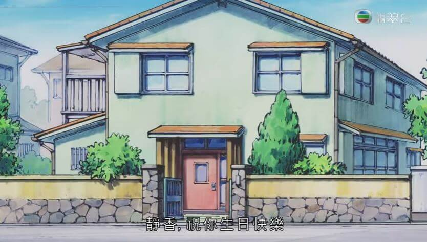
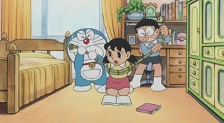

靜香家 |
|  |
概述靜香的家是一棟淺綠色外觀的 2 層樓建築物，外型很典雅，在院子裡養著靜香的愛犬佩羅。相較於大雄家，靜香家的裝潢風格顯得比較西式。 院子 |
 房屋外觀 |
電話一樣是在門口附近，1 樓的客廳有靜香家人鼓勵靜香彈奏的鋼琴，還有一個看起來是衣櫃的櫥櫃。大家為靜香開生日會都是在這邊。靜香最愛去的浴室也是在 1 樓，她 1 天要洗 3 次澡；從浴室的裝潢看，應該是乾濕分離的。 房間 |
 靜香的房間 |
靜香的房間在 2 樓。整體呈現暖色系風格，與打地鋪的大雄不同，有橘色系的床鋪，床鋪就對著落地窗。
|